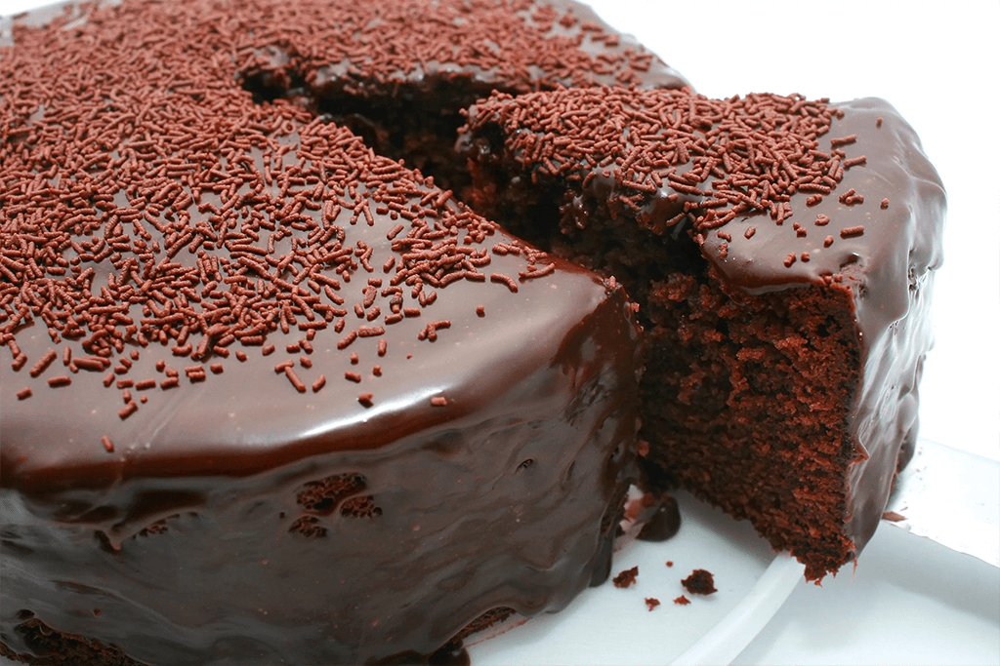

👩🍳Receita de bolo de chocolate
Bolo simples e facil

🤩 Ingredientes
- Massa
- ovos
- 1 e meia xícara de chá de açúcar
- Meia xícara de chá de óleo
- 1 xícara de chá de chocolate em pó
- 2 xícaras de chá de farinha de trigo
- 1 xícara de chá de água quente
- 1 colher de sopa de fermento em pó
🎂 Modo de prepato
Massa
-
Em uma tigela, coloque 3 ovos, 1 e meia xícara de chá de açúcar, meia xícara de chá de óleo, 1 xícara de chá de chocolate em pó e 2 xícaras de chá de farinha de trigo. Misture delicadamente os ingredientes.
-
Em seguida, adicione 1 xícara de chá de água quente, 1 colher de sopa de fermento em pó e bata até ficar homogêneo.
-
Transfira a massa para uma forma untada e enfarinhada com uma mistura de farinha de trigo e chocolate em pó. Leve para assar em forno preaquecido a 180 graus Celsius por 40 minutos.